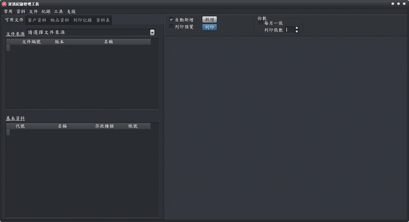

系統架構說明
本軟體主要分為功能表、工作頁、輸入列印等三個區域，說明如下。
功能表
： 軟體首頁之外的功能，均由功能表提供。功能表依常用、資料、文件、支援等數個大項分類。
工作頁
： 輸入、列印時，需要指定表格、編輯人員、相對人（廠商或人員）；輸入與列印後的紀錄檢視， 都由對應的「工作頁」進行管理。
輸入列印
： 所有文件的資料輸入與列印作業，都在此區完成。

資訊紀錄管理工具 - 首頁
架構圖（功能表）：
資訊紀錄管理工具 - 架構圖
 資訊紀錄管理工具 - 架構圖
資訊紀錄管理工具 - 架構圖